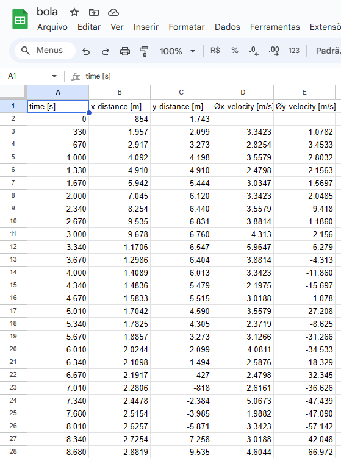
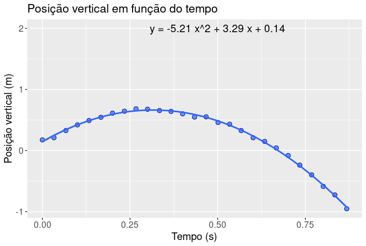
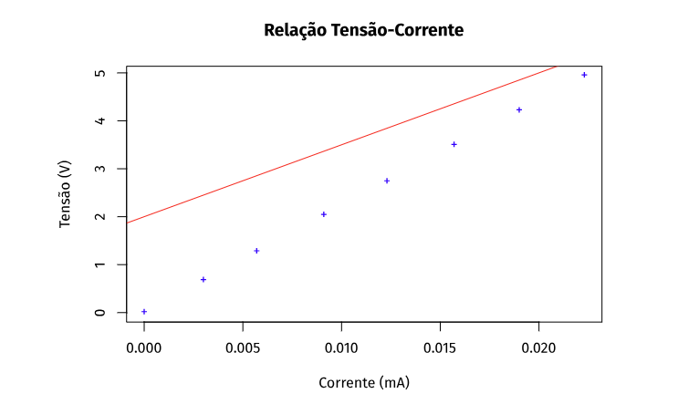
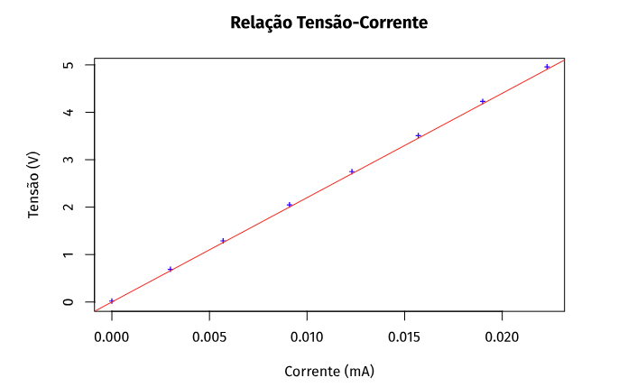
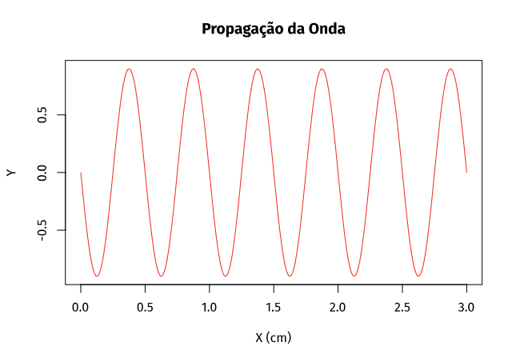
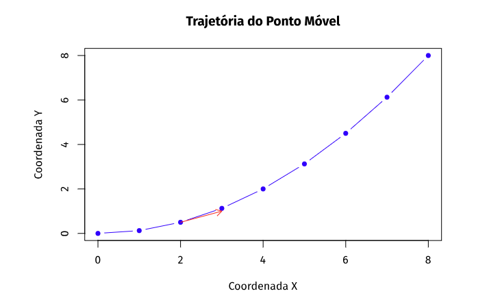

R em sala de aula
Professor: Adeil Araújo
Blog construído com R Markdown


Neste blog pretendo dar insights para que professores possam utilizar a linguagem R em sala de aula.
Uso remoto do R
Para criar este blog estou utilizando o R instalado na minha máquina. Porém, caso você não queira instalá-lo na sua ou esteja utilizando um computador público: laboratório de informática, casa de amigos, etc. aconselho a usar o RStudio Cloud. Tudo o que você fizer ficará armazenado na nuvem e poderá ser acessado posteriormente em outro computador. No RStudio Cloud Você pode fazer o login com sua conta do Gmail ou do Github e acessar o R na nuvem.
R como calculadora
3+1 #adição
## [1] 4
5-3 #subtração
## [1] 2
6*4 #multiplicação
## [1] 24
35/7 #divisão
## [1] 5
3^2 #potência
## [1] 9
sqrt(81) #raiz
## [1] 9
log2(8) #log na base 2
## [1] 3
Há duas opções para ver a saída das operações acima:
A cada operação digitada, por exemplo
3+1você pode apertar CRTL+ENTER ou simplesmente clicar em RUN para ver o resultado4, como mostra a imagem abaixo para ver a saída do programa;Você também tem a opção de digitar todas essas operações e em seguida, selecionar tudo e rodar o programa, apertando CRTL+ENTER ou simplesmente clicar em RUN, para ver a saída.

Neste Post usamos o RStudio Cloud. Faça o teste!
Resolvendo problemas de física básica
Problema 1 - Queda livre
Em 1971, o astronauta americano David Scott realizou, na superfície da Lua, o experimento de queda livre dos corpos no vácuo, anteriormente proposto por Galileu. Deixou cair ali uma pena e um martelo, simultaneamente, a partir da mesma posição. Supondo que ambos os objetos tenham sido soltos de uma altura de 1,6 m em relação à superfície, depois de quanto tempo o martelo alcançaria o solo? Dado: aceleração da gravidade na Lua \(\simeq\) 1,6m/s2.
Resolução:
# Dados
v0 <- 0 # Velocidade inicial (partiu do repouso)
h <- 1.6 # Altura de queda (em metros)
a <- 1.6 # Aceleração da gravidade na Lua (em m/s^2)
# Calculando o tempo (usando a fórmula)
t <- sqrt(2 * h / a)
# Exibindo o resultado
cat("O martelo levaria aproximadamente", round(t, 2), "segundos para alcançar o solo na Lua.")A saída para este programa é:
O martelo levaria aproximadamente 1.41 segundos para alcançar o solo na Lua.
Vou analisar o código linha a linha:
- v0 <- 0: Aqui, estamos definindo a velocidade inicial do objeto. No caso, o objeto parte do repouso, então a velocidade inicial é zero.
obs.: O símbolo <-, que é lido
como “flecha para a esquerda”, em R é chamado de
operador de atribuição. Ele é usado para atribuir valores a variáveis.
Além do operador <-, você também pode usar o sinal de
igual = para atribuição. Ambos fazem a mesma coisa, mas o
<- é mais comum na comunidade R.
h <- 1.6: Essa linha define a altura de queda do objeto. No exemplo, essa altura é igual a 1,6 metros.
a <- 1.6: Nesta linha, estamos atribuindo o valor da aceleração da gravidade na Lua que é de aproximadamente 1,6 m/s2.
t <- sqrt(2 * h / a): Aqui, calculamos o tempo que o objeto levaria para cair da altura especificada. Utilizamos a fórmula da queda livre: \[ t = \sqrt{\frac{2h}{a}} \]
onde (h) é a altura e (a) é a aceleração da gravidade.
Por fim, exibimos o resultado calculado com o comando
cat:
- cat(“O martelo levaria aproximadamente”, round(t, 2), “segundos para
alcançar o solo na Lua.”):O tempo é arredondado para duas casas decimais
(
round(t, 2)) e apresentado em segundos. Neste caso, o martelo levaria aproximadamente 1,41s segundos para alcançar o solo na Lua.
Veja o vídeo deste momento histórico:
Problema 2 - Conversão de temperatura
Sabe-se que a temperatura na qual o papel entra em combustão é de 2330C. O título de um famoso livro de ficção científica é o valor aproximado desta temperatura na escala Fahrenheit. Qual é o título deste livro?
- Fahrenheit 451.
- Fahrenheit 212.
- Fahrenheit 46,6.
- Fahrenheit 419.
- Fahrenheit 233.
Resolução:
# Dados
TC <- 233 # Temperatura em celsius
# Calculando a temperatura em fahrenheit (usando a fórmula)
TF <- (9*TC+160)/5
# Exibindo o resultado
cat("O título do livro é Fahrenheit",round(TF, 0),".")A saída para este programa é:
O título do livro é Fahrenheit 451 .
Vou analisar o código linha a linha:
- TC <- 233: Nesta linha, estamos atribuindo um valor à variável TC, que representa a temperatura em graus Celsius. No exemplo, o valor é 233.
- TF <- (9*TC+160)/5: Aqui, estamos calculando a temperatura em graus Fahrenheit a partir da temperatura em Celsius. Utilizamos a fórmula de conversão: \[ TF = \frac{9 \cdot TC + 160}{5} \] O resultado é armazenado na variável TF.
- cat(“O título do livro é”, round(TF, 0), “.”): Por fim, exibimos o
resultado calculado. A frase “O título do livro é” é seguida pela
expressão
round(TF, 0)que arredonda o valor de TF para o inteiro mais próximo. Neste caso, o resultado é “O título do livro é Fahrenheit 451.”.
Veja também:
- A verdadeira história da Escala Celcius:
- A verdadeira história da Escala Fahrenheit:
Explorando dados de um arquivo CSV com R: Aplicações no Ensino de Física
Contextualização
O surgimento da videoanálise
A videoanálise não é uma técnica nova. Ela foi utilizada pela primeira vez em 1878 pelo fotógrafo inglês Eadweard Muybridge que queria tirar uma dúvida que pairava na época sobre o galope de um cavalo. Havia dúvidas sobre se os cavalos levantavam todas as patas ao mesmo tempo durante um galope. No experimento realizado por este fotógrafo, foram utilizadas várias câmeras, obtendo- se 24 fotografias, em rápida sucessão e em diferentes momentos durante o movimento do cavalo. Entre as fotos, ele conseguiu capturar uma fotografia e comprovar que o cavalo tirava as quatro patas do chão, como mostra a imagem abaixo.

Hoje, com apenas uma câmera embutida nos smartphones e um aplicativo apropriado é possível que os usuários capturem um vídeo e os analisem quadro a quadro obtendo assim dados sobre a velocidade e a posição de um objeto em movimento.
Experimento
Suponha que foi dada a você a tarefa de analisar o movimento de uma bola de tênis, arremessada obliquamente no ar, e de entregar um relatório sobre o estudo desse movimento. Seria interessante que em seu relatório constasse não apenas a revisão teórica, mas também tabelas e gráficos obtidos a partir da análise do movimento real desse objeto.Para obter dados reais, você precisa inicialmente filmar o movimento do objeto e posteriormente analisar o vídeo com um software ou aplicativo de rastreamento. Existem vários deles para os mais diversos sistemas, aqui vamos listar três bastante úteis.O primeiro é o aplicativo VidAnalysis para dispositivo Android, o segundo é o aplicativo Vernier Video Physics, para iPhone e iPad e o terceiro é o software Tracker, que está disponível para Windows, Mac e Linux. Esses aplicativos e software geram, automaticamente, gráficos, tabelas e um arquivo CSV, após o processo de análise do vídeo. Para uma introdução rápida à videoanálise, veja o Apêndice B do livro Júlia com Física: uma introdução. Caso queira personalizar seus gráficos, você deve enviar o arquivo CSV para o seu e-mail e, posteriormente, baixar no computador. Em seguida, basta fazer o upload para o RStudio. Nesse post veremos como isso acontece na prática.
O vídeo que utilizamos para este post está logo abaixo e caso queira você pode fazer o download dele clicando aqui.
A partir desse momento estou considerando que você fez a leitura do apêndice B do livro Julia com Física: uma introdução, como citado acima. Porém, a leitura não é obrigatória. Caso você queira pular a etapa de videoanálise, estou disponibilizando aqui o arquivo CSV para download.

Análise
Com o arquivo CSV em mãos e considerando que o arquivo “bola.csv” está no mesmo diretório onde o código que será executado.Podemos abrir o Rstudio e digitar o código abaixo.
getwd()
# Leia o arquivo CSV (supondo que o arquivo "bola.csv" esteja no mesmo diretório)
dados = read.csv("bola.csv")
dados
install.packages("ggplot2")
# Carregue a biblioteca ggplot2 (se ainda não estiver carregada)
library("ggplot2")
# Ajuste o modelo de regressão polinomial de segunda ordem
modelo <- lm(y.distance..m. ~ poly(time..s., 2, raw = TRUE), dados)
# Exiba os coeficientes
summary(modelo)
# Crie um gráfico de dispersão da posição vertical em função do tempo
ggplot(data = dados, aes(x = time..s., y = y.distance..m.)) +
geom_point(size = 2.5, pch = 21, col = 'blue4', fill = 'cornflowerblue') +
labs(x = "Tempo (s)", y = "Posição vertical (m)", title = "Posição vertical em função do tempo")+
geom_smooth(method = lm, formula = y ~ poly(x, 2, raw = TRUE))+
theme_replace()+
annotate("text", x = .5, y = 2, label = paste("y =", round(coef(modelo)[3], 2), "x^2 +", round(coef(modelo)[2], 2), "x +", round(coef(modelo)[1], 2)), color = 'black', size = 5) +
theme(plot.title = element_text(size = 16), axis.title = element_text(size = 14), axis.text = element_text(size = 12))
Vou explicar o código passo a passo:
getwd():- Essa função não é diretamente relevante para o que estamos fazendo, mas ela retorna o diretório de trabalho atual do R. É como dizer “onde estou guardando meus arquivos”.
- No nosso caso, estamos supondo que o arquivo “bola.csv” está no mesmo diretório onde o código está sendo executado.
- Leitura do arquivo CSV:
- A linha
dados = read.csv("bola.csv")lê os dados de um arquivo chamado “bola.csv”. - O arquivo CSV contém informações sobre uma bola (talvez lançada ou em movimento).
- A linha
- Instalação da biblioteca ggplot2:
- A linha
install.packages("ggplot2")tenta instalar uma biblioteca chamada “ggplot2”. Essa biblioteca é usada para criar gráficos legais.
- A linha
- Carregamento da biblioteca ggplot2:
- A linha
library("ggplot2")carrega a biblioteca “ggplot2” para que possamos usar suas funções. - Se a biblioteca já estiver instalada, ela será carregada.
- A linha
- Ajuste do modelo de regressão polinomial de segunda
ordem:
- O código cria um modelo matemático para entender como a posição vertical de uma bola muda com o tempo.
- O modelo é ajustado usando a função
lm(). - Ele usa uma fórmula especial chamada “polinômio de segunda ordem” para prever a posição da bola com base no tempo.
- Exibição dos coeficientes do modelo:
- A linha
summary(modelo)mostra os números mágicos que ajudam a prever a posição da bola. - Esses números são como as instruções secretas para a bola se mover corretamente.
- A linha
- Criação do gráfico de dispersão:
- O código cria um gráfico que mostra como a posição vertical da bola muda à medida que o tempo passa.
- Os pontos no gráfico representam a posição da bola em diferentes momentos.
- A linha suave no gráfico nos ajuda a ver a tendência geral.
- O título e os rótulos dos eixos são personalizados para que possamos entender o que o gráfico está mostrando.
Em resumo, esse código é como uma receita para entender o movimento de uma bola. Ele usa matemática e gráficos para nos ajudar a descobrir como a bola se comporta.
Veja a saída do código abaixo:

EXTRA!
Para obter os coeficientes separadamente, você pode digitar os comandos abaixo:
# Coeficientes
coeficientes <- coef(modelo)
intercepto <- coeficientes[1]
coef_linear <- coeficientes[2]
coef_quadratico <- coeficientes[3]
print("Intercepto:")
print(intercepto)
print("Coeficiente Linear:")
print(coef_linear)
print("Coeficiente Quadrático:")
print(coef_quadratico)
Saída do programa:
> coeficientes <- coef(modelo)
> intercepto <- coeficientes[1]
> coef_linear <- coeficientes[2]
> coef_quadratico <- coeficientes[3]
> > print("Intercepto:")
[1] "Intercepto:"
> print(intercepto)
(Intercept)
0.144379
> > print("Coeficiente Linear:")
[1] "Coeficiente Linear:"
> print(coef_linear)
poly(time..s., 2, raw = TRUE)1
3.287956
> > print("Coeficiente Quadrático:")
[1] "Coeficiente Quadrático:"
> print(coef_quadratico)
poly(time..s., 2, raw = TRUE)2
-5.21257
Como interpretar esses resultados? Vejamos:
- Intercepto:
- O valor do intercepto é 0.144379.
- No contexto do seu modelo, o intercepto representa o valor previsto da variável de resposta quando todas as outras variáveis independentes são iguais a zero. Em outras palavras, é o valor esperado quando o tempo (ou outra variável) é zero.
- Coeficiente Linear:
- O coeficiente linear é 3.287956.
- Esse coeficiente está associado à variável de tempo (ou outra variável independente). Ele indica como a variável de resposta muda linearmente em relação à variável de tempo. Um valor positivo significa que a variável de resposta aumenta à medida que o tempo aumenta, e um valor negativo indica uma diminuição.
- Coeficiente Quadrático:
- O coeficiente quadrático é -5.21257.
- Esse coeficiente está relacionado à variação não linear da variável de resposta em relação à variável de tempo. Pode representar uma curvatura na relação entre as variáveis.
Modelando a característica de um dipolo (Lei de OHM)
Este post é baseado em um problema respondido na seção “LABO PYTHON” do livro “Physique-Chimie 2de” de Lionel Douthe, Baptiste Fray publicado por Lelivrescolaire.fr Éditions. Tanto o texto apresentado aqui sobre a “História das ciências” bem como o problema respondido constam nas páginas 314 e 315 do livro. Você pode tembém ter acesso a esse problema clicando aqui. A tradução do texto é nossa em colaboração com o ChatGPT.
História das ciências
As pesquisas de Georg Ohm (1789-1854) permitiram que ele formulasse, em 1827, uma relação matemática entre a tensão elétrica nos terminais de um condutor metálico (expressa em volt V) e a corrente elétrica que o atravessa (expressa em ampère A). A Lei de Ohm se apresenta na forma de uma relação de proporcionalidade: U = R.I, onde R representa a resistência elétrica do condutor metálico, expressa em ohms (Ω).
Observação: O condutor ôhmico é um dipolo no qual a Lei de Ohm se aplica. Sua principal propriedade é opôr resistência ao fluxo da corrente elétrica. Ele é frequentemente chamado de resistor. Às vezes, ocorre confusão entre a resistência (o objeto) e a resistência R (a grandeza física que caracteriza o condutor ôhmico e é expressa em ohms).
Nota: Em geral, um elemento de circuito (resistor, baterias, etc.), que possua dois terminais é chamado dipolo.
Veja mais sobre a vida de George Simon Ohm:
Problema
Fizemos medições da corrente que passa por um dipolo para diferentes tensões
| U (V) | 0.00 | 0.67 | 1.27 | 2.03 | 2.73 | 3.49 | 4.21 | 4.94 |
|---|---|---|---|---|---|---|---|---|
| I (mA) | 0.00 | 3.00 | 5.70 | 9.10 | 12.30 | 15.70 | 19.00 | 22.30 |
Represente este conjunto de pontos U=f(I) usando a linguagem de programação R, utilizando símbolos “+” de cor azul. (adaptada: o problema original pede que seja utilizada a linguagem python.)
Sobrepõe a estes pontos experimentais a representação gráfica de um modelo matemático, do tipo aplicação linear a·x + b, em vermelho, usando a = 150 e b = 2.
Varie os valores de a e b para que a reta do modelo se aproxime o máximo possível dos pontos experimentais.
- Este dipolo é realmente um resistor? Justifique. Especifique o valor da resistência do resistor.
Solução
O problema original pedia que para a solução fosse utilizada a linguagem Python. Aqui resolvemos em R, não tinha como não ser.
veja a baixo o script comentado.
# Dados experimentais
U <- c(0, 0.67, 1.27, 2.03, 2.73, 3.49, 4.21, 4.94) # Definindo os valores de tensão
I <- c(0, 3.0e-3, 5.7e-3, 9.1e-3, 12.3e-3, 15.7e-3, 19.0e-3, 22.3e-3) # Definindo os valores de corrente
# Plotagem do gráfico de dispersão
plot(I, U, pch = "+", col = "blue", xlab = "Corrente (mA)", ylab = "Tensão (V)", main = "Relação Tensão-Corrente")
# Aqui, estamos plotando um gráfico com os valores de corrente no eixo x e os valores de tensão no eixo y. Os pontos são marcados com o símbolo "+" e são azuis.
# Coeficientes da equação da reta ajustada
a <- 150 # Coeficiente angular (resistência em Ohms)
b <- 2 # Coeficiente linear
# Traçar a curva vermelha conectando os pontos previstos
abline(b, a, col = "red")
# Aqui, estamos adicionando uma linha reta vermelha ao gráfico. Esta linha representa o modelo linear ajustado aos pontos experimentais.
# Imprimir os coeficientes calculados
cat("Os coeficientes da reta ajustada são:\n")
cat("a =", a, "\n")
cat("b =", b, "\n")
# Aqui, estamos imprimindo os coeficientes da reta ajustada, que são o coeficiente angular 'a' e o coeficiente linear 'b'.
No segundo ponto do problema é pedido que comecemos com os valors usando a = 150 e b = 2. Você percebe, na imagem abaixo, que o ajuste de curva em vermeçho não passa pelos pontos (+) gerados pelo programa.

Temos que ajustar a curva vermelha aos pontos de (+) e conseguimos isso quando chegamos a = 220 e b = 0. Veja!

Outra possibilidade de se resolver o problema é mostrado abaixo. Nesse script não precisamos ficar Variando os valores de a e b.
# Dados experimentais
U <- c(0, 0.67, 1.27, 2.03, 2.73, 3.49, 4.21, 4.94)
I <- c(0, 3.0e-3, 5.7e-3, 9.1e-3, 12.3e-3, 15.7e-3, 19.0e-3, 22.3e-3)
# Explicação: Um vetor é uma lista ordenada de números. Aqui, temos dois vetores:
# U, que armazena valores de tensão, e I, que armazena valores de corrente.
# Plotagem do gráfico de dispersão
plot(I, U, pch = "+", col = "blue", xlab = "Corrente (mA)", ylab = "Tensão (V)", main = "Relação Tensão-Corrente")
# Explicação: Esta linha cria um gráfico com os valores de corrente (no eixo x) versus
# os valores de tensão (no eixo y). Os pontos são marcados com um sinal de mais (+) em azul.
# Ajuste do modelo linear
coeficientes <- lm(U ~ I)$coefficients
# Explicação: Aqui, estamos ajustando um modelo linear aos nossos dados experimentais.
# Isso significa encontrar a melhor linha reta que se aproxima dos pontos no gráfico.
# O $ acessa os resultados do modelo, e coefficients são os coeficientes desse modelo.
a <- coeficientes[2] # Coeficiente angular
b <- coeficientes[1] # Coeficiente linear
# Explicação: O coeficiente a é a inclinação da linha reta no gráfico, e o coeficiente b
# é o ponto onde a linha intercepta o eixo y (quando a corrente é zero).
# Traçar a curva vermelha conectando os pontos previstos
lines(I, a * I + b, col = "red")
# Explicação: Aqui, estamos adicionando uma linha vermelha ao gráfico. Esta linha é
# a nossa melhor estimativa de como a tensão (U) muda com a corrente (I), com base
# no modelo linear que ajustamos anteriormente.
# Verificação se o componente é um resistor e cálculo da resistência
resistencia <- a
if (resistencia > 0) {
cat("O componente é um resistor com resistência aproximada de", round(resistencia, 2), "Ohms.\n")
} else {
cat("O componente não se comporta como um resistor.\n")
}
# Explicação: Aqui estamos verificando se o componente comporta-se como um resistor.
# Se o coeficiente angular do modelo for maior que zero, podemos dizer que o componente
# se comporta como um resistor. Em seguida, imprimimos a resistência aproximada do resistor.
# Se o coeficiente angular for zero ou negativo, o componente não se comporta como um resistor.
Explorando as Maravilhas das Ondas: da Teoria à Simulação Prática
Autores: Adeil Araújo em colaboração com o ChatGPT
Ondas - essas atrações fascinantes e poderosas que tanto influenciam nosso mundo, desde a música ao surf, da produção de energia à física das ondas. No nosso blog de hoje, mergulharemos nas profundezas do conhecimento das ondas, desde sua formação até sua representação numérica, utilizando a linguagem R para dar vida a esses conceitos abstratos.
Compreendendo a Natureza das Ondas Marítimas
As ondas do mar são verdadeiras maravilhas da natureza, impulsionadas pelo vento e moldadas pela topografia do oceano. Quando o vento sopra sobre a superfície do mar, ele cria perturbações que se transformam em ondas, viajando por vastas distâncias até quebrarem suavemente na praia. Entender esse público é essencial para surfistas, amantes do mar e cientistas curiosos.
Da Teoria à Prática: Simulando Ondas com R
Graças à linguagem de programação R, podemos dar vida à teoria das ondas em nossos próprios computadores. Com apenas algumas linhas de código, podemos definir os parâmetros de uma onda - sua amplitude, velocidade e período - e criar uma representação visual de como ela se propaga no espaço e no tempo.
No código fornecido, definimos as configurações de uma onda mecânica
simples - amplitude (A), velocidade (v) e período (T) - e calculamos sua
função para um momento específico no tempo (t = 1.5). Em seguida,
utilizamos a função plotpara criar um gráfico que nos
mostra a propagação da onda ao longo do eixo x, com picos e vales
representados em vermelho, proporcionando uma visão vívida da
“Propagação da Onda”.
Vejamos um exemplo prático de como isso é feito:
# Definindo os parâmetros da onda
A <- 0.9
v <- 2
T <- 0.25
# Criando uma sequência de valores para x
x <- seq(0, 3, length.out = 300)
# Calculando a função da onda para um momento específico
t <- 1.5 # momento específico
k <- 2 * pi / (v * T)
F <- A * sin(2 * pi / T * t - k * x)
# Plotando a onda
plot(x, F, type = "l", col = "red", xlab = "X (cm)", ylab = "Y", main = "Propagação da Onda")

Vou explicar cada linha do código:
A <- 0.9: Esta linha define a amplitude da onda. No contexto das ondas, a amplitude representa a altura máxima da onda em relação à sua linha média.v <- 2: Aqui, estamos definindo a velocidade da onda. Isso indica a velocidade com que a onda se propaga.T <- 0.25: Esta linha define o período da onda. O período é o tempo necessário para uma onda completar um ciclo completo.x <- seq(0, 3, length.out = 300): Esta linha cria uma sequência de valores para a posição ao longo do eixo x, que representa a distância ao longo da onda.t <- 1.5: Aqui, estamos definindo um momento específico no tempo para o que queremos calcular a onda. Neste exemplo, estamos usando t = 1,5.k <- 2 * pi / (v * T): Esta linha calcula o número de onda k, que é uma constante relacionada à frequência e à velocidade da onda.F <- A * sin(2 * pi / T * t - k * x): Aqui, calculamos a função da onda para o momento específico t. Esta expressão representa a forma da onda em relação à posição xe ao tempo t. Utilizamos a função seno para modelar a onda senoidal.plot(x, F, type = "l", col = "red", xlab = "X (cm)", ylab = "Y", main = "Propagação da Onda"): Finalmente, esta linha plota a onda no gráfico cartesiano. O argumentotype = "l"indica que queremos uma linha contínua no gráfico, ecol = "red"especifica que queremos a cor da linha vermelha. Os argumentosxlab,ylabemainsão usados para rotular os eixos xey, bem como o título dos gráficos.
Desafios e Descobertas: Explorando Além das Ondas
Enquanto navegamos pelas águas do conhecimento das ondas, enfrentamos desafios e descobrimos novas perspectivas. Podemos modificar os parâmetros da onda - alterar sua amplitude ou período - e observar como essas mudanças afetam sua representação visual. Podemos até mesmo usar a relação entre período, comprimento de onda e velocidade para calcular a verdadeira natureza das ondas que vemos quebrando na costa.
Conclusão: Ondas além do Horizonte
À medida que encerramos nossa jornada pelas ondas, é claro que essas características específicas e dinâmicas oferecem um vasto oceano de conhecimento a ser explorado. Com ferramentas como R, não podemos apenas compreender teoricamente as ondas, mas também simular e visualizar suas propriedades de uma maneira tangível e envolvente.
Então, mergulhe fundo, explore além do horizonte e deixe-se levar pela maré do conhecimento das ondas. O mundo está esperando para ser descoberto, onda após onda.
Explorando a Trajetória e Velocidade de um Ponto Móvel
Autores: Adeil Araújo em colaboração com o ChatGPT
Nesta atividade, vamos aprender como plotar a trajetória de um ponto móvel e calcular sua velocidade em diferentes pontos ao longo do percurso. Utilizaremos um conjunto de coordenadas fornecidas para representar a trajetória do ponto móvel.
Passo 1: Definição das Coordenadas
Antes de tudo, precisamos definir as coordenadas do ponto móvel ao longo de sua trajetória. Utilizaremos um vetor de coordenadas que contém os valores das coordenadas x e y em intervalos conhecidos.
coordenadas <- c(0, 0, 1, 0.125, 2, 0.5, 3, 1.125, 4, 2, 5, 3.125, 6, 4.5, 7, 6.125, 8, 8)Passo 2: Divisão das Coordenadas em Pares (x, y)
Em seguida, dividimos as coordenadas em pares ordenados (x, y) para facilitar a plotagem da trajetória.
# Dividindo as coordenadas em pares (x, y)
coordenadas_x <- coordenadas[seq(1, length(coordenadas), by = 2)]
coordenadas_y <- coordenadas[seq(2, length(coordenadas), by = 2)]Passo 3: Plotagem da Trajetória
Com as coordenadas divididas, podemos plotar a trajetória do ponto móvel em um gráfico bidimensional.
# Plotando a trajetória do ponto móvel
plot(coordenadas_x, coordenadas_y, type = "b", pch = 16, col = "blue",
xlab = "Coordenada X", ylab = "Coordenada Y", main = "Trajetória do Ponto Móvel")Passo 4: Cálculo e Visualização da Velocidade
Além de observar a trajetória, também estamos interessados em entender a velocidade do ponto móvel em diferentes pontos ao longo da trajetória. Para isso, calculamos o vetor velocidade em um ponto específico e o visualizamos no gráfico.
# Função para calcular e plotar o vetor velocidade
velocidade <- function(x, y, Dt, i) {
# Cálculo das coordenadas do vetor velocidade
vx <- (x[i + 1] - x[i - 1]) / (2 * Dt)
vy <- (y[i + 1] - y[i - 1]) / (2 * Dt)
# Plotando o vetor velocidade
arrows(x0 = x[i], y0 = y[i], x1 = x[i] + vx, y1 = y[i] + vy, col = "red", length = 0.1)
}
# Intervalo de tempo
Dt <- 1
# Índice do ponto
i <- 3
# Chamando a função velocidade
velocidade(coordenadas_x, coordenadas_y, Dt, i)
Com esses passos, conseguimos visualizar a trajetória e calcular a velocidade do ponto móvel em diferentes pontos ao longo do percurso. Experimente ajustar os parâmetros e explore as diferentes possibilidades!
Este texto fornece uma explicação passo a passo de como o código pode ser usado em uma atividade prática de física, ajudando os alunos a entenderem os conceitos de trajetória e velocidade de forma visual e interativa.